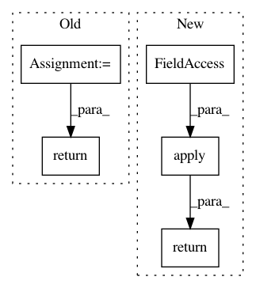

6f679b06d10d39edcb066142eec9e3bcd6d9de4b,keras_preprocessing/image/dataframe_iterator.py,DataFrameIterator,_filter_valid_filepaths,#DataFrameIterator#Any#Any#,244
Before Change
lambda fname: os.path.join(self.directory or "", fname)
)
format_check = filepaths.map(get_extension).isin(self.white_list_formats)
existence_check = filepaths.map(os.path.isfile)
return df[format_check & existence_check]
@property
def filepaths(self):
root = self.directory or ""
After Change
filepaths = df[x_col].map(
lambda fname: os.path.join(self.directory or "", fname)
)
mask = filepaths.apply(validate_filename, args=(self.white_list_formats,))
n_invalid = (~mask).sum()
if n_invalid:
warnings.warn(
"Found {} invalid image filename(s) in x_col="{}". "
"These filename(s) will be ignored."
.format(n_invalid, x_col)
)
return df[mask]
@property
def filepaths(self):
root = self.directory or ""
In pattern: SUPERPATTERN
Frequency: 5
Non-data size: 5
Instances
Project Name: keras-team/keras-preprocessing
Commit Name: 6f679b06d10d39edcb066142eec9e3bcd6d9de4b
Time: 2019-02-25
Author: rragundez@users.noreply.github.com
File Name: keras_preprocessing/image/dataframe_iterator.py
Class Name: DataFrameIterator
Method Name: _filter_valid_filepaths
Project Name: cornellius-gp/gpytorch
Commit Name: 54b7a0df2fee5d7a961c533855e358678d697a86
Time: 2019-03-13
Author: kaw293@cornell.edu
File Name: gpytorch/kernels/rbf_kernel.py
Class Name: RBFKernel
Method Name: forward
Project Name: NVIDIA/flownet2-pytorch
Commit Name: dafdc9b5cb8fa4c65285aad22b1429549d06d71a
Time: 2018-02-04
Author: chenkaidev@gmail.com
File Name: networks/channelnorm_package/modules/channelnorm.py
Class Name: ChannelNorm
Method Name: forward
Project Name: NVIDIA/flownet2-pytorch
Commit Name: dafdc9b5cb8fa4c65285aad22b1429549d06d71a
Time: 2018-02-04
Author: chenkaidev@gmail.com
File Name: networks/correlation_package/modules/correlation.py
Class Name: Correlation
Method Name: forward
Project Name: NVIDIA/flownet2-pytorch
Commit Name: dafdc9b5cb8fa4c65285aad22b1429549d06d71a
Time: 2018-02-04
Author: chenkaidev@gmail.com
File Name: networks/resample2d_package/modules/resample2d.py
Class Name: Resample2d
Method Name: forward